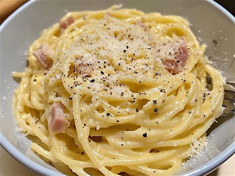

Spaghetti-Carbonara

Das sind Spaghetti Carbonara
Spaghetti Carbonara is a creamy and flavorful Italian pasta dish that comes from Rome. It’s made by tossing hot pasta with crispy pork, eggs, cheese, and black pepper to create a silky sauce without using cream. The dish is rich, savory, and perfectly balanced with a touch of spice from the pepper. It’s simple yet elegant, highlighting the best of Italian cooking.
Ingredients
- Pasta
- pork
- eggs
- cheese
- pepper
Steps
- Cook spaghetti in salted water until al dente. Reserve some pasta water before draining.
- Cook diced pork (guanciale, pancetta, or bacon) in a pan until crispy, then set aside.
- Whisk eggs, yolks, grated cheese, and black pepper in a bowl to make the sauce.
- Toss the hot spaghetti with the pork in the pan, then mix in the egg sauce and a little pasta water to make it creamy.
- Serve with extra cheese and pepper on top.